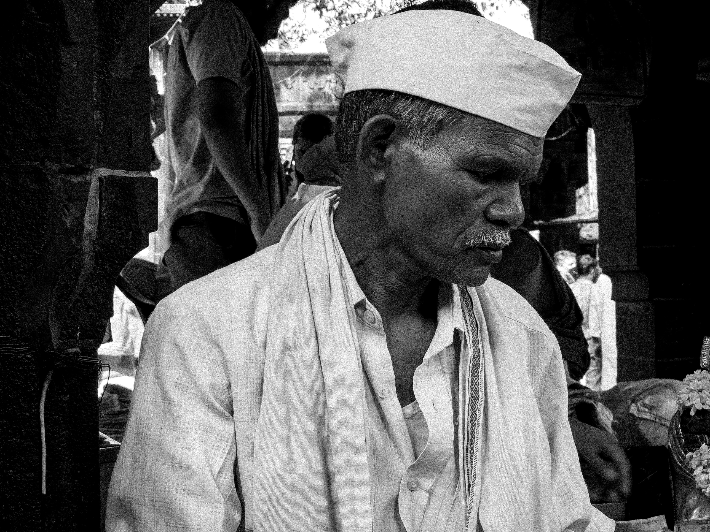
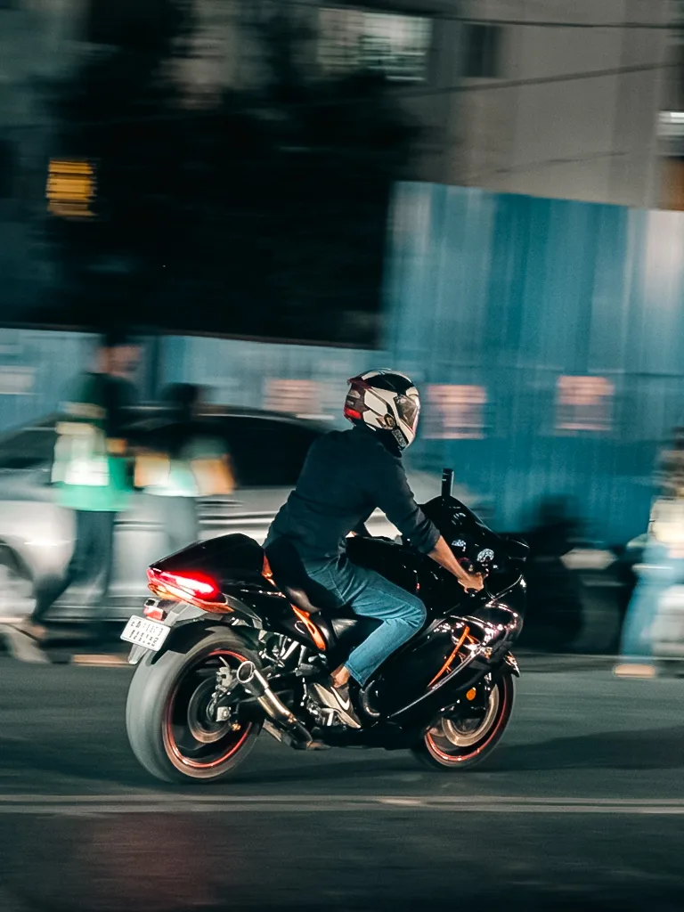
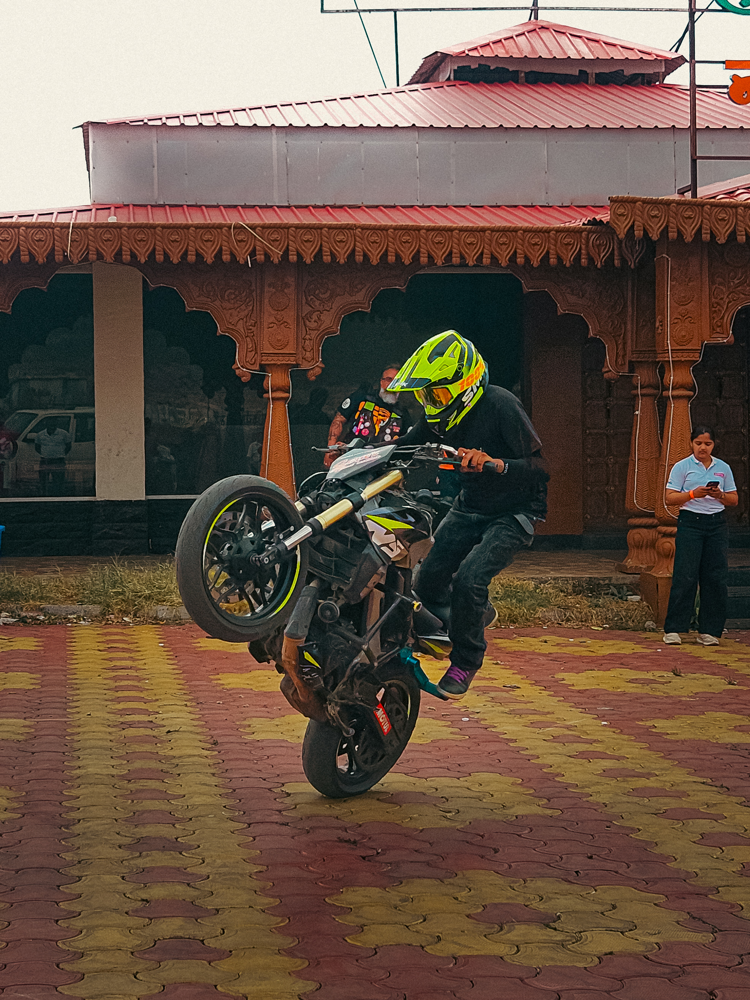
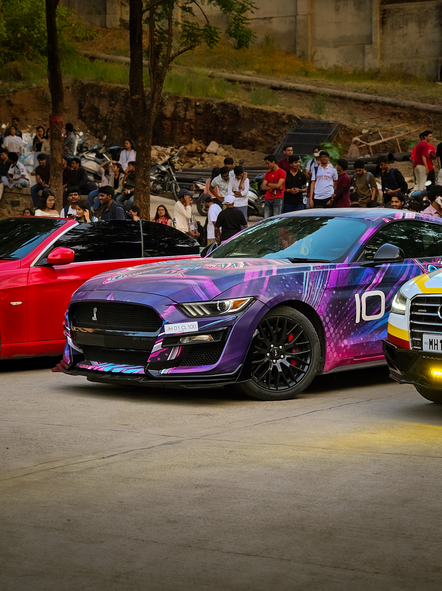
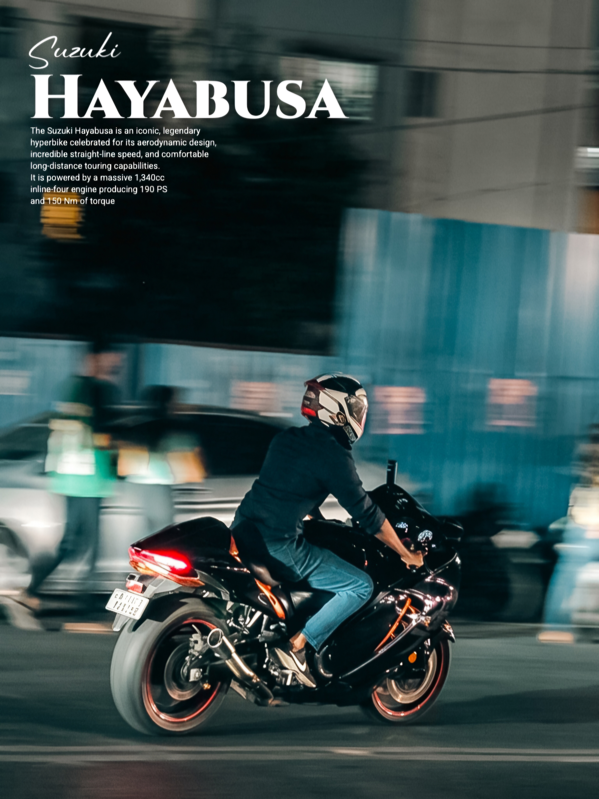
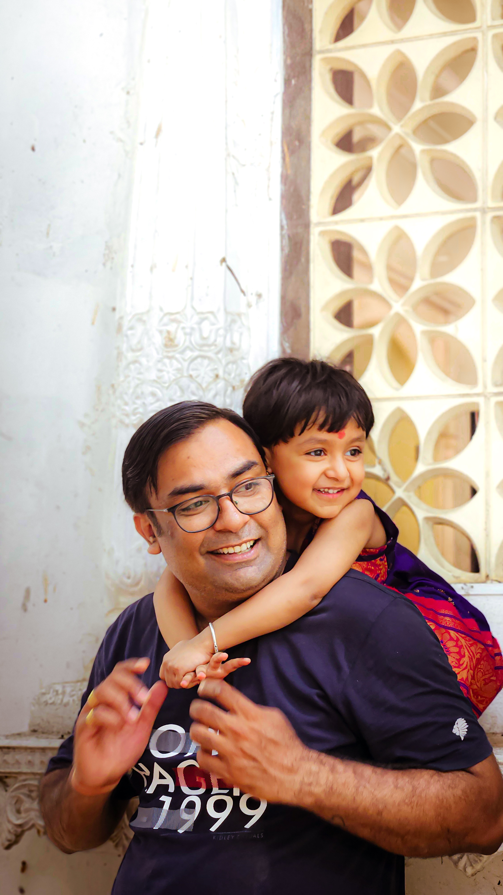
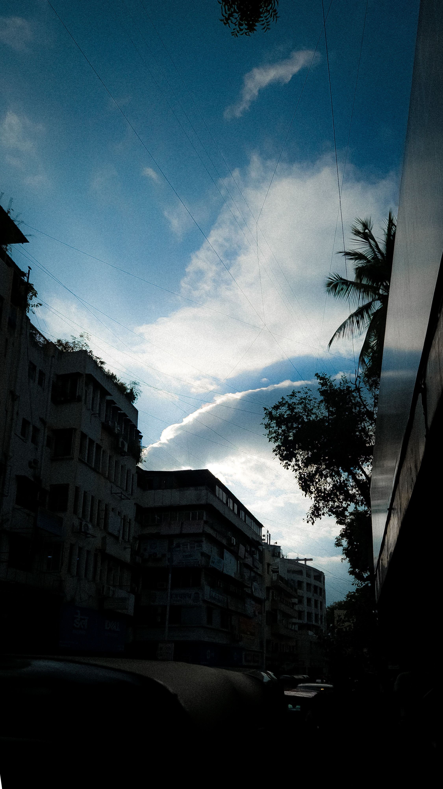
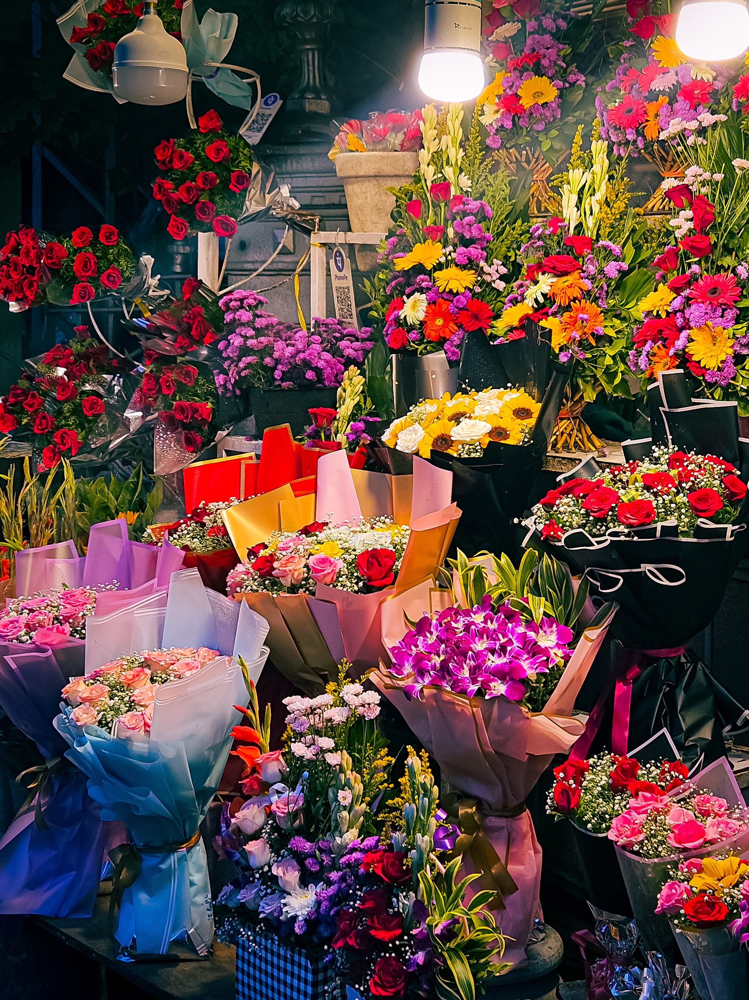
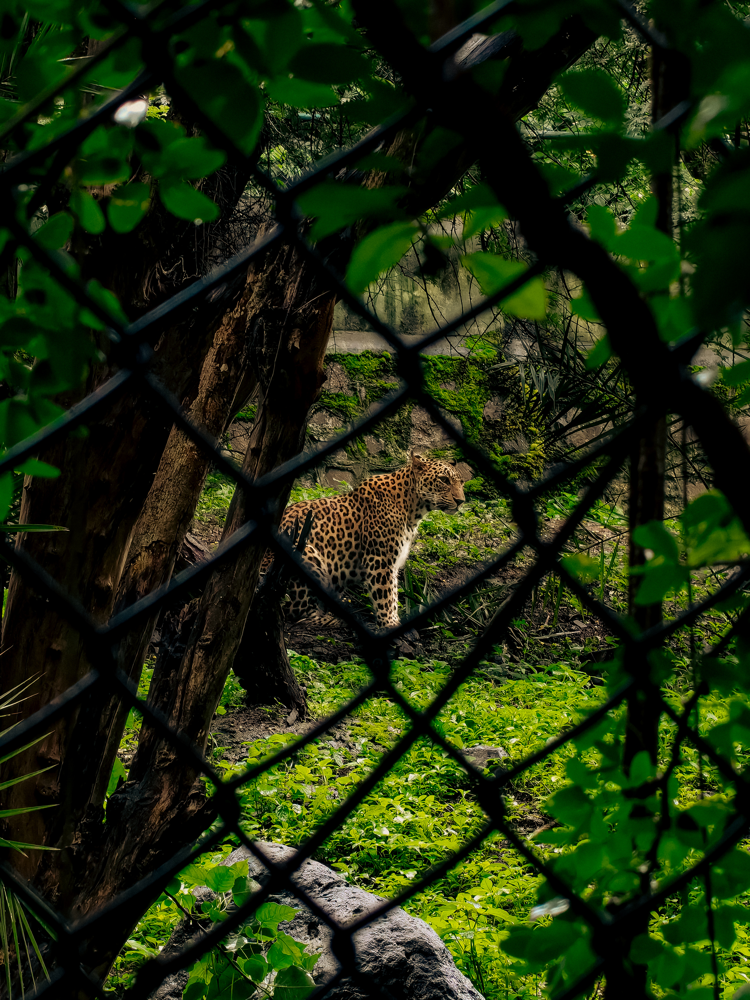
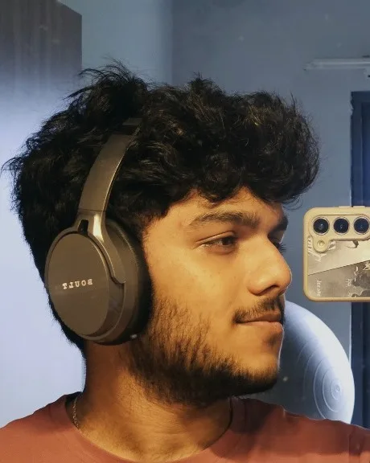

⌜ ⌟INSPECT
SHOT
The Elder of the Ghats
PEOPLE & SOULS
SHOWREEL // 2026
A fast cut of visual rhythm, streets, automotive motion, and atmosphere. Shot on Samsung Galaxy S23.

DISCIPLINES // CRAFT
I shoot on a Samsung Galaxy S23. Photography, event coverage, reels, video editing — that's what I do. I'm drawn to candid moments, speed, light, and the quiet details most people walk past. I work in Pune, travel when I can, and I'm still building my visual language.
Street, candid portraits, automotive culture, architecture, and finding unusual frames in everyday moments.
Capturing the live energy of college fests, concerts, and campus gatherings with dynamic ground coverage.
Short-form vertical video crafted for punchy rhythm, organic sound design, and engaging social feeds.
Post-production in Premiere Pro and CapCut with a focus on visual flow, intentional pacing, and mood.
A GROWING ARCHIVE // 01
Things that make me stop: people, streets, bikes, cars, skies, architecture, travel, shadows, textures, and the unplanned moments in between. Captured on Samsung Galaxy S23 and graded for cinematic presence.

PEOPLE & SOULS

ATMOSPHERES & NIGHT

SPEED & MACHINES

SPEED & MACHINES

SPEED & MACHINES
SPEED & MACHINES

ATMOSPHERES & NIGHT

ATMOSPHERES & NIGHT

PEOPLE & SOULS

NATURE & WILDLIFE

ATMOSPHERES & NIGHT

ATMOSPHERES & NIGHT

ATMOSPHERES & NIGHT

PLACES & STRUCTURES

NATURE & WILDLIFE
PLACES & STRUCTURES
Edited for Vishwaconclave at VIT Pune. Bringing together event footage, stage performances, crowd interactions, and campus atmosphere into a continuous visual narrative.
Daily visual experiments, behind-the-scenes moments, reels, and camera tests direct from Pune.
Worked as part of the multimedia team for Vishwaconclave, contributing to the event's visual storytelling through post-production.
Edited the official Vishwaconclave Aftermovie, bringing together event footage, performances, interactions, and the overall atmosphere into a single visual narrative.
Working with the SWD multimedia team across campus initiatives, event coverage, and digital visual media at Vishwakarma Institute of Technology.
PHILOSOPHY & PROFILE // 04
I’m Tanmay Chavan, a 19-year-old student based in Pune with roots in Nagpur. I don’t always go looking for a photograph—I just keep my eyes open for a frame that makes me stop: streets, bikes, cars, skies, and quiet daily moments.
Behind the camera, I slow down and pay attention to light, timing, and small details. I shoot on my Galaxy S23 and edit across Premiere Pro, Lightroom, and CapCut, building my visual language one frame at a time.
Shot on Galaxy S23. Edited in Premiere Pro, Lightroom, CapCut.

HOW I CREATE // 06
I like slow, minimal, intentional visuals—the kind that let you stay with a frame. I’m learning how pacing, light, and subtle cuts can create a mood without overcomplicating things.
I’m not finished. I’m building my visual language one frame at a time.
— TANMAY CHAVANUsing the Samsung Galaxy S23 to find frames in spontaneous situations. Focusing on natural lighting, geometry, reflections, and perspective rather than waiting for ideal conditions.
Letting shots breathe. Resisting the urge to cut too quickly, giving viewers space to take in the surroundings, the atmosphere, and the emotion of the place.
Trying different pacing, colour grades, transitions, and storytelling approaches—always choosing what helps the moment rather than adding effects for their own sake.
I want to keep learning, experimenting, creating, and discovering my style—especially through travel films and commercial visual work that keep their personality.
CONTACT // 07
Have an idea, a place worth exploring, or just want to connect? Send me a message. I’m building, learning, and always happy to talk visuals, bikes, cars, travel, or a frame that caught your eye.
00:00 IST (UTC+05:30)
PUNE, INDIA / IST